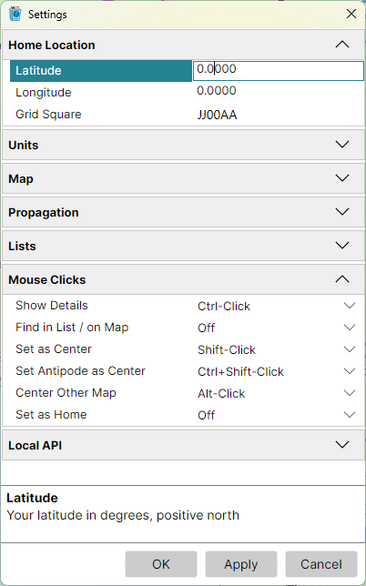

Settings Dialog
Tools > Settings opens the Settings dialog: a list of settings in sections, each section folding open to its fields.

- click a field to edit it; its description is shown under the list;
- right-click a field's name and pick Reset to return it to its default value;
- OK applies the changes and closes the dialog, Apply applies them and keeps it open, and Cancel discards the changes not yet applied.
A grid square that is not a valid Maidenhead locator, or two mouse click actions given the same keys, are reported when you click OK or Apply, and nothing is applied until they are corrected.
Home Location
Your location, marked on both maps; see Home Location.
- Latitude - in degrees, positive north;
- Longitude - in degrees, positive east;
- Grid Square - your 4- or 6-character Maidenhead locator. Entering it moves the latitude and longitude to the centre of the square.
Units
- Distance - km / m, Miles / Feet or Nautical Miles / Feet: the first unit for the distances in the status bar and on the map, the second for the elevation and the map scale in the status bar.
Map
The settings both maps share:
- Gray Line Update Interval - how often the gray line is redrawn as the sun moves, in seconds;
- Gray Line - the parts of the gray line drawn while it is on, and where its night shadow begins:
- Sun - the sun glyph at the point where the sun is overhead;
- Terminator - the line between day and night;
- Twilight Shadow - a lighter band between the terminator and the night shadow;
- Night Shadow - the darker shadow over the night side;
- Twilight - where the twilight shadow ends and the night shadow begins: at the end of Civil, Nautical or Astronomical twilight, with the sun 6°, 12° or 18° under the horizon.
Propagation
What the propagation map is computed for; see Propagation Prediction. This section is shown only with the Amateur Radio functions on.
Lists
- Name Search - how the Search box of the Lists Panel matches names: Exact, by their letters, ignoring case, or Phonetic, by their sound, so Gray finds Grey.
Mouse Clicks
The keys held with a click for each action, on a map or on a row of the Lists panel. Each action can be given Click, Ctrl-Click, Shift-Click, Alt-Click, Ctrl+Shift-Click, Ctrl+Alt-Click or Alt+Shift-Click, or Off for no keys. No two actions may have the same keys, but any number may be off. Every action is also in the map's context menu, whatever its keys.
| Action | Default | What it does |
|---|---|---|
| Show Details | Ctrl-Click | shows the Item Details of what is under the click, or of the row clicked |
| Find in List / on Map | Off | on a map, selects the item clicked in the Lists panel; on a row, finds its item on the map |
| Set as Center | Shift-Click | centres the azimuthal map on the point clicked |
| Set Antipode as Center | Ctrl+Shift-Click | centres the azimuthal map on the point opposite the one clicked |
| Center Other Map | Alt-Click | centres the other map on the point clicked |
| Set as Home | Off | makes the point clicked your home location, once you confirm it |
A plain click on a label shows its Item Details unless an action has been given Click.
API
The WebSocket API through which other programs on this computer drive the maps: the Port they connect to, and the Allowed Origins, the web pages that may connect. See the Developer's Guide.